OracleZoom
Reference-Constrained Recursive Image Super-Resolution Beyond Ground Truth
OracleZoom uses the last available ground-truth reference to train deeper zooms. Each step takes the model's previous prediction as input. Training constrains the structure that the reference can still verify and guides the finer detail that must be synthesized.
Pick a zoom depth and compare
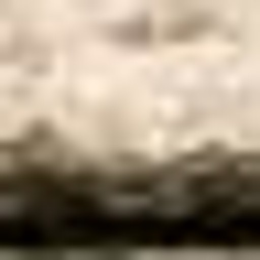
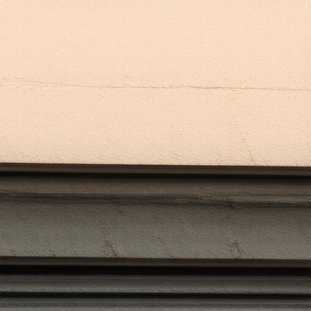
At 256×
- OracleZoom
- 0.706
- Chain-of-Zoom
- 0.579
- OSEDiff
- 0.532
Training stops at 16×. The deeper zooms come from the same 7.1M-parameter adapter, trained on 1,000 images.
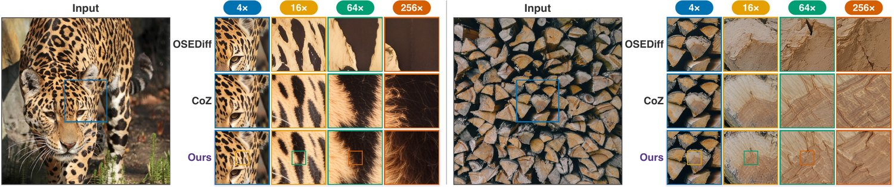
Try it on your own photo
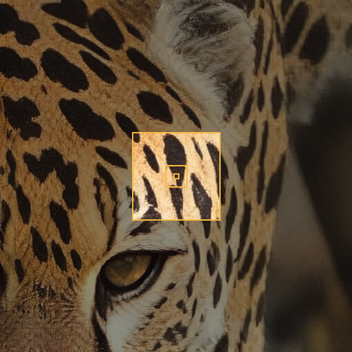
Abstract
Recursive image Super-Resolution (SR) reaches extreme magnification by feeding each prediction back into the same model, like zooming into an image again and again. Real ground truth for deep zooms is impractical to capture (a full 256× target would be a 52 GB image), so predictions at deeper zooms have no supervision. Yet the last ground-truth image still contains the region that every deeper zoom magnifies.
OracleZoom turns this region into a training signal. Inspired by on-policy self-distillation, the model trains on its own prediction for one recursive step (4× to 16×), and a cross-scale loss projects each 16× prediction back to the last ground truth at 4×. This projection can verify only coarse content, so a no-reference quality objective guides the remaining fine detail, and a latent prior stops this objective from adding hallucinated artifacts.
On seven datasets, OracleZoom achieves the highest CLIPIQA at every zoom depth (mean 0.713 vs. 0.621 for Chain-of-Zoom), with the largest gains at the deepest zooms, even though training stops at 16× and optimizes a different quality metric. Pooled over two ground-truth-anchored judges, this added detail comes at the same hallucination rate as Chain-of-Zoom at 16× and a lower rate at 4×, and removing the cross-scale loss raises hallucination at 16×.
The zoom continues after direct supervision ends
A recursive super-resolution model enlarges a region, crops into its prediction, and repeats. Any mistake can become part of the next step's input. To supervise every step from a 512×512 input through 256×, the source would need to reach 131072×131072 pixels: about 52 GB for one uncompressed RGB image.
Such targets are impractical at scale. Our setup provides ground truth at 4×, but no matching targets for deeper zooms. Captions can guide what the model draws. They cannot verify the textures or boundaries it adds.
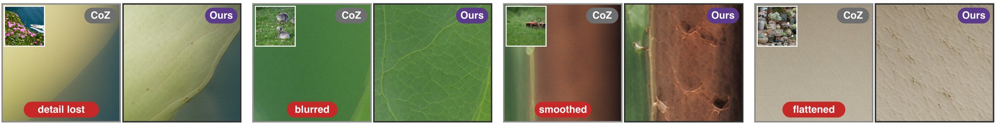
A deeper zoom covers a smaller region of the last target. Reducing the prediction to the target's resolution lets us check its shapes and boundaries against that region, even though finer detail remains unverified.
Use the last reference to check the next zoom
A 16× prediction has no matching target, but the region it enlarges is still visible in the 4× reference. OracleZoom projects that prediction back to the reference resolution and compares the aligned regions. This checks the structure that remains observable, even when finer detail cannot be verified.
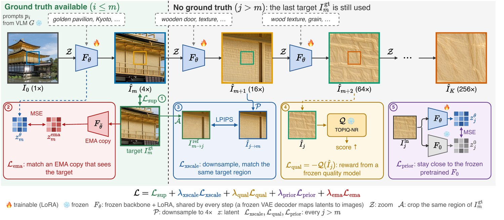
1. Anchor the first prediction weight 1.0
At 4×, LPIPS compares the decoded prediction with the ground-truth image. This teaches the adapter to preserve observed content at the scale where a direct target exists.
2. Carry the reference forward weight 1.0
Project the deeper prediction back to the last reference resolution. Match it to the corresponding ground-truth region with LPIPS. This constrains observable structure beyond the last directly supervised scale.
3. Guide the unresolved detail weight 0.4
Many detailed images can shrink to the same lower-resolution view. A frozen quality model, TOPIQ-NR, encourages plausible detail within that ambiguity. TOPIQ-NR supplies the training reward and is excluded from the primary evaluation.
4. Limit drift from the pretrained model weight 8.0
A latent prior keeps the adapted latent prediction close to the frozen SR model's prediction on the same input. It restrains quality optimization from introducing unsupported patterns.
5. Stabilize training at the boundary weight 0.1
An exponential moving average (EMA) copy of the adapter supplies a steadier latent target using the ground-truth input at the supervision boundary. This branch is used only during training.
A small adapter shared across scales
We train a rank-16 LoRA adapter on the SD3 transformer: 7.1M parameters, 1,000 images. The SR backbone, VAE decoder, and VLM prompter stay frozen. At inference, the adapter runs in the existing recursion without ground truth, the quality model, or the EMA branch.
Why quality guidance needs a prior
Removing the latent prior raises 16× CLIPIQA from 0.710 to 0.794. But projected-reference error (P-DISTS) worsens from 0.215 to 0.331, and the judged hallucination rate rises from 0.45 to 1.00. The higher quality score comes with more errors against the available evidence.
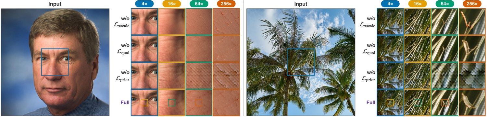
The benefit grows at deeper zooms
We compare seven methods on seven datasets with matched inputs, zoom paths, crop geometry, and metrics. OracleZoom and Chain-of-Zoom use the same VLM prompter. The other baselines use their native SR pipelines without that shared prompter. We measure perceptual quality and agreement with the available reference, then use two VLM judges to check each zoom against the ground-truth region that it magnifies.
| Method | No-reference quality, higher is better | Fidelity at 4×, where ground truth exists, lower is better | ||
|---|---|---|---|---|
| CLIPIQA, mean | CLIPIQA at 256× | LPIPS | DISTS | |
| HiT-SR | 0.414 | 0.488 | 0.420 | 0.253 |
| MambaIR | 0.428 | 0.501 | 0.421 | 0.255 |
| SwinIR | 0.456 | 0.463 | 0.295 | 0.200 |
| SeeSR | 0.546 | 0.505 | 0.252 | 0.171 |
| OSEDiff | 0.581 | 0.532 | 0.366 | 0.237 |
| Chain-of-Zoom | 0.621 | 0.579 | 0.233 | 0.169 |
| OracleZoom ours | 0.713 | 0.706 | 0.214 | 0.160 |
OracleZoom leads the compared methods in mean CLIPIQA and aggregate 4× LPIPS and DISTS. CLIPIQA averages all four scales across seven test sets; fidelity counts all 1,631 images of the four datasets with 4× targets equally. At 256×, CLIPIQA is 0.706, compared with 0.579 for Chain-of-Zoom.
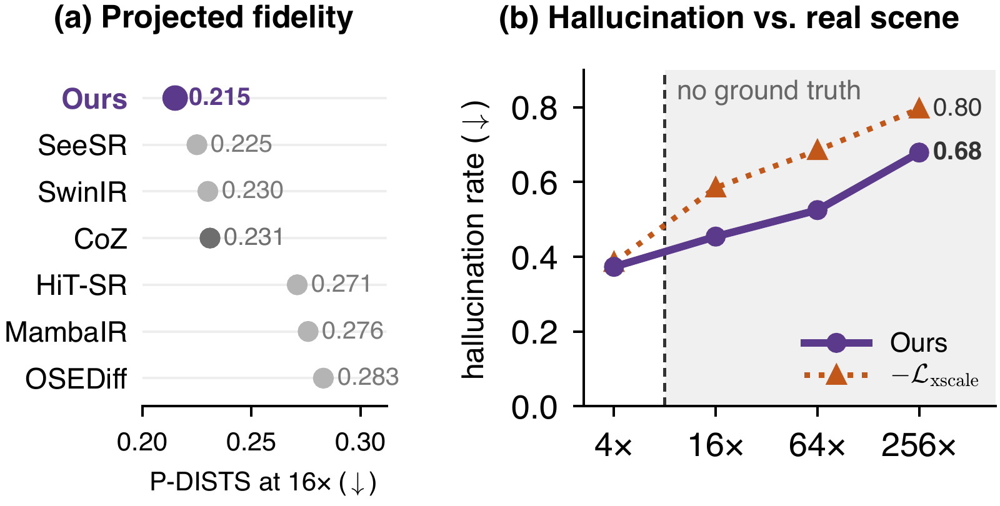
Check what the last reference can still tell us
At 16×, we can test whether generated structure still agrees with the 4× reference. After projection, OracleZoom achieves the lowest P-DISTS (0.215, lower is better), against 0.225 for SeeSR, 0.230 for SwinIR, and 0.231 for Chain-of-Zoom. These scores measure preserved evidence at the reference resolution.
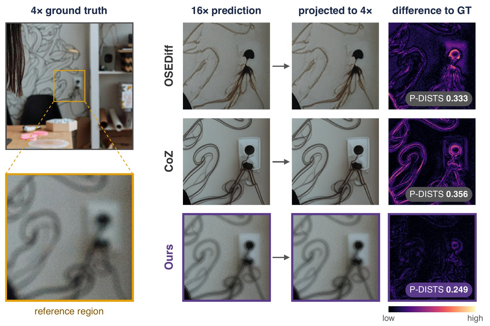
Two VLM judges from different vendors, Gemini 4 Argon and GPT-6.1 Sol, compare each zoom with the native ground-truth region that it magnifies. Each scale has 120 region-aligned examples, judged in both A/B orders. Both judges come from different model families than the Qwen prompter.
| Scale | Gemini 4 Argon | GPT-6.1 Sol | Pooled | |||
|---|---|---|---|---|---|---|
| OracleZoom | Chain-of-Zoom | OracleZoom | Chain-of-Zoom | OracleZoom | Chain-of-Zoom | |
| 4× | 0.40 | 0.45 | 0.34 | 0.39 | 0.37 | 0.42 |
| 16× | 0.44 | 0.46 | 0.47 | 0.44 | 0.45 | 0.45 |
| 64× | 0.49 | 0.53 | 0.56 | 0.53 | 0.53 | 0.53 |
| 256× | 0.65 | 0.57 | 0.71 | 0.63 | 0.68 | 0.60 |
At 4×, where ground truth is available, OracleZoom wins 69% of decided comparisons. At 256×, OracleZoom is flagged more often (0.68 versus 0.60), but the ground-truth region holds very few native pixels there, so this check is reliable only up to 16×. Without the cross-scale loss, the hallucination rate at 16× rises from 0.45 to 0.59.
Follow the detail across different scenes
These examples follow the same 4× to 256× trajectory on four of the seven test sets. Compare how material texture and local boundaries evolve as each output becomes the next input. Open any figure to inspect the details.
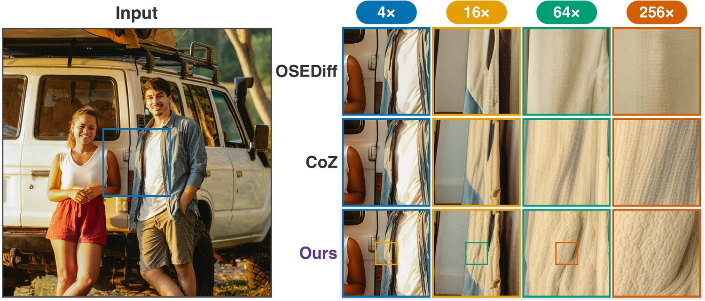
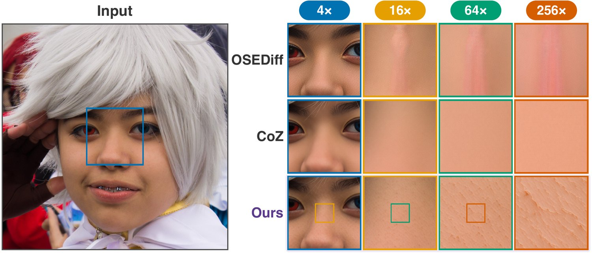
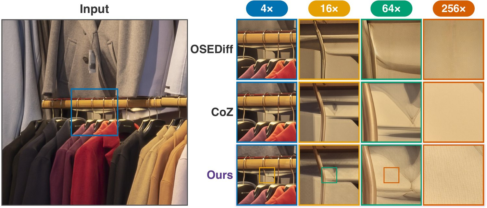
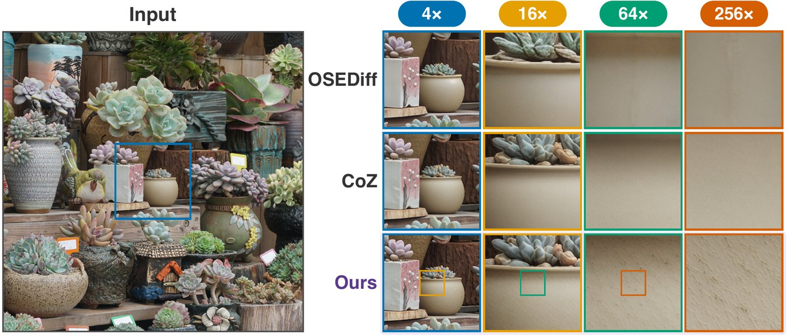
Contributions
OracleZoom shows how the last available ground truth can guide recursive super-resolution beyond direct supervision.
- 1. Formulate the supervision gap in recursive zoom.
- We formulate recursive super-resolution when ground-truth targets become impractical at deeper scales. Each prediction becomes the next input, so training must account for errors carried across zoom steps.
- 2. Carry the last reference beyond that gap.
- OracleZoom trains on its own recursive predictions. Aligned cross-scale projection checks deeper outputs against the last available ground truth, preserving observable evidence without annotations at deeper scales.
- 3. Separate verifiable structure from unresolved detail.
- Direct and cross-scale supervision constrain what the reference can verify. A quality objective guides the remaining detail, a latent prior from the pretrained model limits drift, and EMA consistency stabilizes training.
- 4. Add detail at the same hallucination rate.
- Across seven datasets, OracleZoom achieves 0.713 mean CLIPIQA and the best aggregate 4× LPIPS (0.214) and DISTS (0.160) among the compared methods. Pooled over two ground-truth-anchored VLM judges, its hallucination rate is lower than that of Chain-of-Zoom at 4× (0.37 versus 0.42) and the same at 16× (0.45 versus 0.45).
Demo, code, model, and data
Demo
Upload a photo, pick a point, and zoom it to 256× in the browser. Runs on ZeroGPU.
Hugging Face SpaceModel
The transformer with the trained LoRA adapter merged in, plus the checkpoints inference needs.
Merged model weightsThe preprint is on arXiv: arXiv:2609.06490. Paper, demo, model, and data are gathered in one Hugging Face collection.
BibTeX
@misc{dipta2026oraclezoom,
title = {OracleZoom: Reference-Constrained Recursive Image
Super-Resolution Beyond Ground Truth},
author = {Shubhashis Roy Dipta and Nobin Sarwar and Md Rizwan Parvez},
year = {2026},
eprint = {2609.06490},
archivePrefix = {arXiv},
primaryClass = {cs.CV},
url = {https://arxiv.org/abs/2609.06490}
}